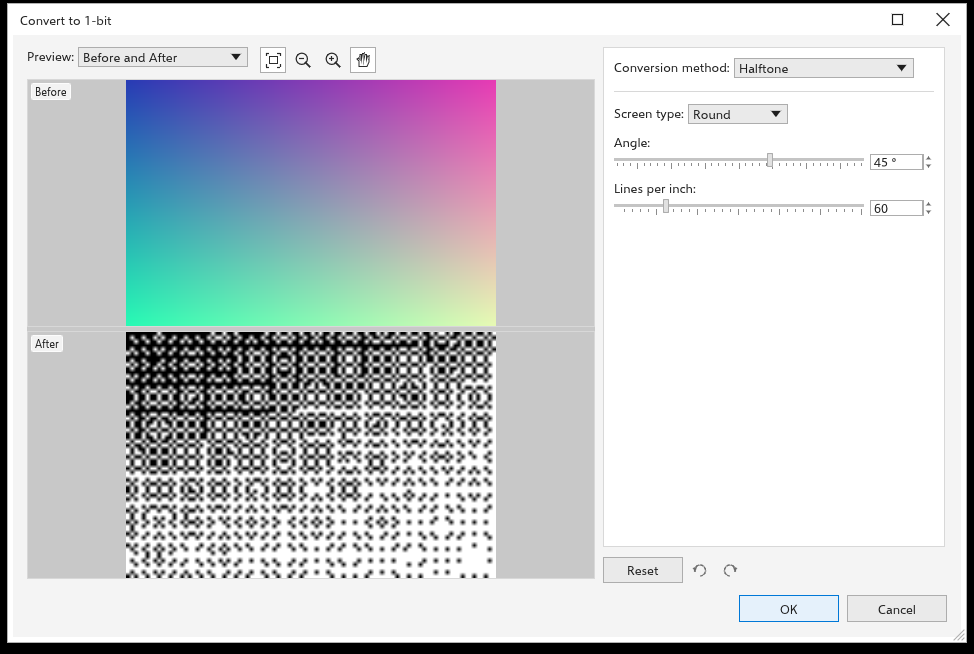
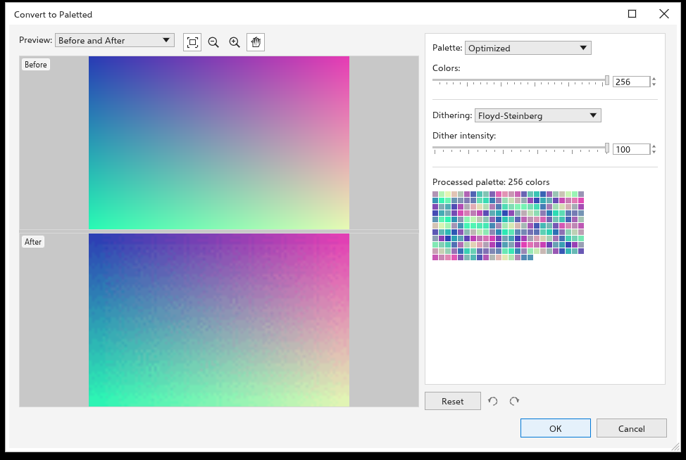

Changer le mode de couleur des images bitmap
Images bitmap > Mode convertit les images bitmap sélectionnées dans un autre mode de couleur. Chaque image sélectionnée change en une seule étape d'annulation, et la transparence est conservée. Les modes qui ont des réglages ouvrent une boîte de dialogue avec des aperçus avant et après ; les réglages sont dans un panneau à droite et, dessous, Réinitialiser les remet, tandis que les deux flèches annulent et rétablissent les modifications faites dans la boîte de dialogue.
| Mode | Résultat |
|---|---|
| Noir et blanc (1 bit) | noir et blanc uniquement (voir ci-dessous) |
| Niveaux de gris (8 bits) | niveaux de gris |
| Bichromie (8 bits) | une à quatre encres (voir ci-dessous) |
| Palette (8 bits) | 256 couleurs au plus (voir ci-dessous) |
| Couleur RGB (24 bits) | le mode de l'image devient RVB ; les pixels restent tels quels |
| Couleurs Lab (24 bits) | couleur Lab |
| Couleur CMJN (32 bits) | le mode de l'image devient CMJN et ses pixels montrent les couleurs que les encres peuvent imprimer, calculées avec les profils de gestion des couleurs |
Le menu coche Couleur RGB (24 bits) ou Couleur CMJN (32 bits) quand toutes les images sélectionnées sont dans ce mode, et la barre d'état indique le mode d'une image sélectionnée, par exemple « Bitmap 600 x 400 px (CMYK) ». Une image CMJN d'un fichier .cdr s'ouvre en mode CMJN, et les fichiers .tdraw gardent le mode. Outils > Convert Colors règle de la même façon le mode de chaque image qu'il convertit (voir Convertir les couleurs).
Noir et blanc

Choisissez la méthode de conversion :
- Dessin au trait : blanc là où le gris atteint ou dépasse le seuil (128 au départ), noir ailleurs ;
- Ordonné : un motif régulier de points ;
- Demi-teinte (au départ) : une trame de points ronds, de lignes ou de points carrés selon un angle (45 degrés) et un nombre de lignes par pouce (60) ;
- Distribution de cardinalité : une texture d'aspect aléatoire ;
- Jarvis, Stucki et Floyd-Steinberg : diffusion d'erreur, les résultats les plus doux pour les photos.
Intensité (de 0 à 100, 50 au départ) rend le résultat plus clair ou plus foncé.
Bichromie

Une bichromie imprime une image en niveaux de gris avec quelques encres, ce qui donne des tons riches avec peu de couleurs.
- Choisissez le type : Monochromie, Bichromie (au départ), Trichromie ou Quadrichromie, pour une à quatre encres.
- Cliquez sur une encre pour changer sa couleur.
- Modifiez sa courbe : l'axe horizontal est le niveau de gris (le noir à gauche), l'axe vertical la quantité de cette encre imprimée. Faites glisser dans un espace vide pour ajouter un point, faites glisser un point pour le déplacer, double-cliquez dessus ou faites-le glisser hors de la grille pour le supprimer. Tout afficher dessine aussi les courbes des autres encres.
- Enregistrer et Charger conservent les encres et les courbes dans un fichier.
Palette

- Palette : Couleurs uniformes, VGA standard (16 couleurs), Adaptative et Optimisée (les couleurs propres à l'image, réduites au nombre de couleurs que vous réglez, jusqu'à 256), Niveaux de gris, Système ou Personnalisée (la palette du document).
- Tramage : Aucun, Ordonné, Jarvis, Stucki ou Floyd-Steinberg, avec l'intensité du tramage.
La palette obtenue s'affiche sous les réglages.
Colorer des images bitmap noir et blanc
Quand seules des images bitmap à deux couleurs sont sélectionnées, cliquez sur une couleur de la palette pour colorer leur fond, et cliquez avec le bouton droit pour colorer leur premier plan.